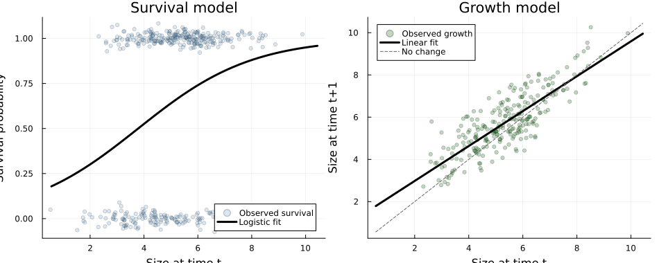

Overview
VitalRateModels.jl sits at the data-analysis end of structured population modelling. In matrix projection models (MPMs) and integral projection models (IPMs), vital rates are the demographic processes that determine how individuals survive, grow, and reproduce between censuses. Following Caswell (2001) and Ellner, Childs & Rees (2016), we typically model those rates first and then assemble them into a projection matrix or kernel.
This vignette introduces the basic workflow:
- simulate realistic demographic data,
- fit survival and growth vital rates,
- predict those rates over a size domain, and
- visualize the fitted relationships.
Setup
using VitalRateModels, DataFrames, StatsModels, Distributions, Plots
using Random
using Statistics
using StructuredPopulationCore: ContinuousDomain, meshpoints
Random.seed!(2026)
theme(:default)Simulating a monocarpic perennial
We simulate a size-structured perennial herb that survives and grows for several years, then flowers once at larger sizes. Size is measured on a continuous scale such as log rosette area. Small individuals have low survival, growth is approximately linear, and fecundity increases rapidly with size.
n = 400
size_t = clamp.(rand(Normal(5.0, 1.4), n), 0.5, 10.0)
# Survival: logistic regression with increasing survival for larger plants.
surv_prob = @. 1 / (1 + exp(-(-2.2 + 0.55 * size_t)))
survived = rand.(Bernoulli.(surv_prob)) .== 1
# Growth: linear trend with Gaussian noise among survivors.
size_t1 = similar(size_t)
for i in eachindex(size_t)
mu = 1.1 + 0.87 * size_t[i]
size_t1[i] = survived[i] ? rand(Normal(mu, 0.8)) : 0.0
end
size_t1 = clamp.(size_t1, 0.0, 12.5)
# Fecundity: Poisson counts increasing with size, but only for survivors.
fec_mean = @. exp(-3.5 + 0.42 * size_t)
fecundity = [survived[i] ? rand(Poisson(fec_mean[i])) : 0 for i in eachindex(size_t)]
data = DataFrame(
size_t = size_t,
size_t1 = size_t1,
survived = survived,
fecundity = fecundity,
)
first(data, 6)| Row | size_t | size_t1 | survived | fecundity |
|---|---|---|---|---|
| Float64 | Float64 | Bool | Int64 | |
| 1 | 3.71462 | 5.58695 | true | 0 |
| 2 | 5.43903 | 0.0 | false | 0 |
| 3 | 3.26561 | 0.0 | false | 0 |
| 4 | 5.76498 | 4.39444 | true | 1 |
| 5 | 5.16062 | 6.26776 | true | 0 |
| 6 | 5.68819 | 5.91198 | true | 0 |
The resulting data look like a typical IPM field data set: size at time $t$, size at time $t+1$, whether the individual survived, and reproductive output.
println("Observed survival = ", round(mean(data.survived), digits=3))
println("Mean size at t = ", round(mean(data.size_t), digits=2))
println("Mean size at t+1 = ", round(mean(data.size_t1[data.survived]), digits=2))
println("Mean fecundity = ", round(mean(data.fecundity), digits=2))Observed survival = 0.63
Mean size at t = 5.03
Mean size at t+1 = 5.76
Mean fecundity = 0.19Fitting survival and growth models
For size-dependent survival we use fit_vital_rate(SurvivalModel, ...), which dispatches to a binomial GLM with a logit link by default. For growth we use fit_vital_rate(GrowthModel, ...), which fits a Gaussian linear model for size at the next census.
survival_fit = fit_vital_rate(
SurvivalModel,
data,
@formula(survived ~ size_t),
)
growth_fit = fit_vital_rate(
GrowthModel,
filter(:survived => identity, data),
@formula(size_t1 ~ size_t),
)
println("Survival model AIC = ", round(survival_fit.aic, digits=2))
println("Growth model AIC = ", round(growth_fit.aic, digits=2))
println("Growth residual SD = ", round(growth_fit.sigma, digits=3))Survival model AIC = 493.13
Growth model AIC = 598.82
Growth residual SD = 0.788This is the standard demographic workflow: estimate each component separately, then combine the fitted objects later into a projection model.
Predicting on a size domain
To build an IPM we need predictions on a regular size mesh. Here we use a ContinuousDomain from StructuredPopulationCore.jl and predict both survival and expected size at the next time step.
domain = ContinuousDomain(0.5, 10.5, 80)
size_domain = meshpoints(domain)
survival_hat = predict_vital_rate(survival_fit, size_domain)
growth_hat = predict_vital_rate(growth_fit, size_domain)
pred_df = DataFrame(
size_t = size_domain,
survival = survival_hat,
expected_size_t1 = growth_hat,
)
first(pred_df, 6)| Row | size_t | survival | expected_size_t1 |
|---|---|---|---|
| Float64 | Float64? | Float64? | |
| 1 | 0.5625 | 0.179049 | 1.79029 |
| 2 | 0.6875 | 0.1879 | 1.89361 |
| 3 | 0.8125 | 0.197083 | 1.99693 |
| 4 | 0.9375 | 0.206601 | 2.10026 |
| 5 | 1.0625 | 0.216455 | 2.20358 |
| 6 | 1.1875 | 0.226644 | 2.3069 |
Plotting fitted curves
The fitted survival curve should be sigmoidal, while the fitted growth relationship should be close to linear with slope less than one. Those shapes are typical of perennial plant IPMs where larger individuals survive better but do not grow proportionally forever.
p1 = scatter(
data.size_t,
Float64.(data.survived) .+ rand(Normal(0, 0.03), n),
alpha=0.2,
ms=3,
label="Observed survival",
xlabel="Size at time t",
ylabel="Survival probability",
title="Survival model",
color=:steelblue,
)
plot!(p1, size_domain, survival_hat, linewidth=3, label="Logistic fit", color=:black)
p2 = scatter(
data.size_t[data.survived],
data.size_t1[data.survived],
alpha=0.25,
ms=3,
label="Observed growth",
xlabel="Size at time t",
ylabel="Size at time t+1",
title="Growth model",
color=:darkgreen,
)
plot!(p2, size_domain, growth_hat, linewidth=3, label="Linear fit", color=:black)
plot!(p2, size_domain, size_domain, linestyle=:dash, color=:gray40, label="No change")
p = plot(p1, p2, layout=(1, 2), size=(950, 380))
p
Extending the workflow
The same simulated data can support fecundity and recruitment models as well. In a full IPM analysis we would typically fit:
- survival $s(z)$,
- growth $G(z' \mid z)$,
- fecundity or flowering $b(z)$, and
- recruit size distribution $c(z')$.
Those fitted objects can then be converted into kernel components with vital_rates_to_kernel().
Summary
In this vignette we:
- simulated a realistic demographic data set for a monocarpic perennial,
- fit logistic survival and Gaussian growth models with
fit_vital_rate, - predicted both vital rates over a continuous size domain, and
- visualized the fitted demographic relationships.
These fitted vital rates are the statistical building blocks for the model-selection, fecundity, and kernel-construction workflows in the remaining vignettes.
References
- Caswell, H. (2001). Matrix Population Models. Sinauer.
- Ellner, S. P., Childs, D. Z., & Rees, M. (2016). Data-Driven Modelling of Structured Populations. Springer.